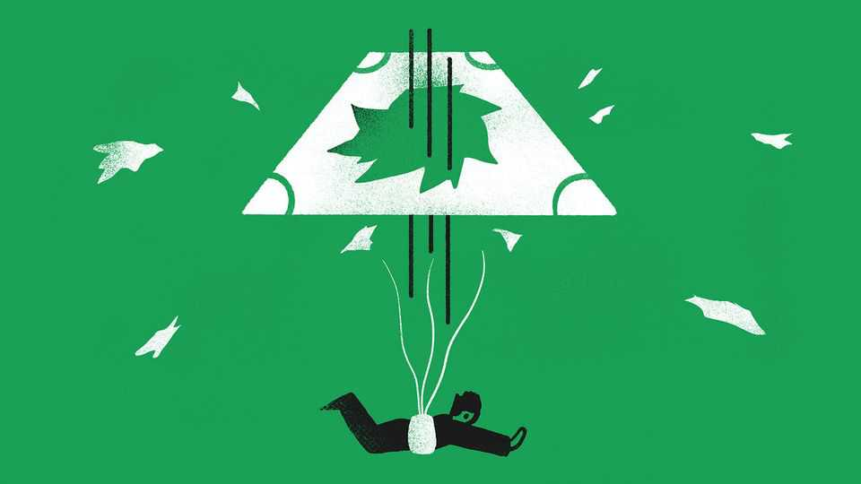

In an AI blow-up, would insurance pay out?
Credit default swaps are back in vogue amid fears of a debt disaster

Oct 29th 2026
IN 1912 FRANZ REICHELT, a tailor and inventor, ascended to the first level of the Eiffel Tower to offer a demonstration. He had designed a suit which could double as a parachute. After mixed results with mannequins, he decided it was time for a manned test—and fell to a grisly end. Today owners of credit-default swaps (CDSs), a form of insurance designed to pay out when borrowers go bust, likewise find themselves in mid-air with an untested parachute.
CDSs can be used to hedge exposure to debt, or to speculate. But are they a good way to do either? The instruments gained notoriety in the global financial crisis of 2007-09, then got their wings clipped during the euro-zone debt crisis. In 2011 the Greek government’s initial restructuring of its debt failed to trigger CDS payouts. Although the contracts were eventually activated in 2012, by then many investors had lost faith. They lost more in 2014, after Portugal’s central bank split the failing Banco Espirito Santo in two and the International Swaps and Derivatives Association (ISDA) judged its CDSs to apply to the stronger offshoot. Some investors who held the old bank’s bonds faced huge losses—and Reichelt-like protection.
Despite these setbacks, the CDS is back in vogue. Concern over France’s public debt has driven the cost of related five-year CDSs to its highest in 14 years. In America the cost of insuring against a default in the next five years by Oracle, a cloud-computing giant going all-in on artificial-intelligence data centres, has quadrupled in the past 12 months. If the world’s mounting pile of debt comes crashing down, many CDS investors can expect a hard landing.
In some ways CDSs have been made less flaky. For example, changes to the terms of standard contracts in 2014 made it clear the redenomination of government debt into currencies other than the euro would count as a default, which was not explicit before. Bond exchanges, where an old liability is forcibly swapped for a new one more favourable to the borrower, also now count as a CDS-triggering default.
But although some of the old holes have been patched up, new tears have appeared. Since the last big update to ISDA’s rules 12 years ago, corporate defaults have become as unfashionable as skinny jeans, thanks to furious legal innovation by firms facing bankruptcy, especially in America. Many now opt for liability-management exercises (LMEs), creative restructurings of their debts that avoid lengthy court battles. Since 2024 LMEs in America have outnumbered conventional defaults.
Investors waited months for a CDS payout after Altice France, a telecoms firm, announced an aggressive LME restructuring in 2024. Holders of CDSs covering the debt of Ardagh Group, a European packaging manufacturer, faced an even rockier ride after its LME in July the same year. Prices of Ardagh CDSs fell at first, when it appeared that they would not be triggered. The payouts eventually landed, but not before investors again began to question the swaps’ merit.
At least Altice and Ardagh are based in Europe, where restructuring is considered a credit event that can (in principle) trigger a CDS. Not so in North America, home to almost all of the AI companies being buffeted by the credit-market storm. The businesses making chips, building data centres and otherwise involved in the fast-moving AI economy are reaching for complicated financing arrangements. Their loans are backed by things like data-centre leases and “remaining performance obligations” (customers’ promises to pay them for computing capacity). Suppliers are lending money to their customers, sometimes while borrowing loads themselves. Such complexity is a recipe for a nasty and uncertain restructuring.
Defenders argue that CDSs still provide protection in the event of a default. The sophisticated investors who most commonly buy such products are often prepared for protracted legal battles and willing to weather the volatility.
This makes CDSs sound like resource-intensive bets on distressed debt in the mould of Oaktree Capital or Elliott Management. Yet that is not how they were envisaged. Their original purpose was to make it easier to hedge exposure to debt by offering a predictable payout in the event of non-payment. When the payout is no longer predictable—and requires investors to turn into Howard Marks or Paul Singer, the hard-charging founders of Oaktree and Elliott, respectively—CDSs look as threadbare as Reichelt’s wings. ■